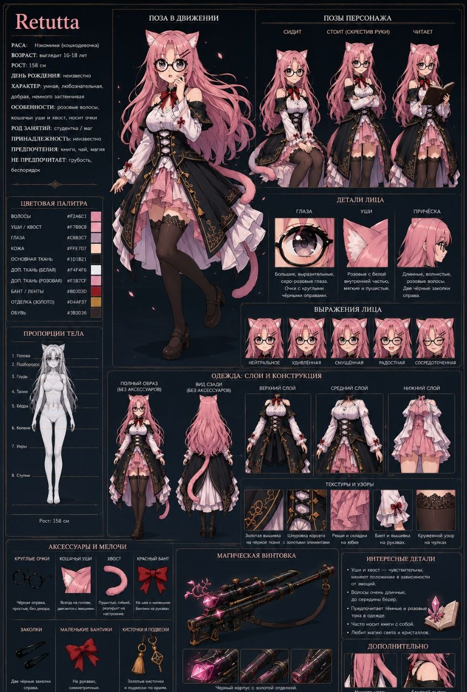

✧
Профіль
РасаКошкодівчинка
Вік18–20
Зріст158 см
ПриналежністьАкадемія магії
Допитлива, добра й трохи сором’язлива. Вивчає стародавні заклинання, збирає кристали та захищає тих, хто їй дорогий.

Retutta ✦Короткий профіль персонажа — як сторінка зі стародавнього магічного архіву.
Добра, розумна, допитлива й трохи сором’язлива. Любить затишок, чай, книжки та кристали. У важливі моменти стає рішучою.
Довге рожеве хвилясте волосся, рожеві котячі вушка й пухнастий хвіст, круглі чорні окуляри, червоний бант та чорно-золоте вбрання.
Повороти, емоції, деталі образу та магічне спорядження.
Рожева енергія кристалів — серце її сили.
Retutta накопичує ману в кристалах і перетворює її на щити, промені та магічні печаті. Сила зростає, коли вона захищає близьких.
Чорний корпус із золотим оздобленням і рожевим кристалом. Поєднує точність, далекобійність і кристалічні заряди.
Затишна музика для читання заклинань, чаю та тихих вечорів.
Додай посилання на свій Spotify-плейлист або улюблений трек.
Заміни ці посилання на свої профілі, коли будеш готова.
Цей сайт — маленький куточок всесвіту Retutta. Тут можна збирати арти, історії, музику та нові сторінки її легенди.